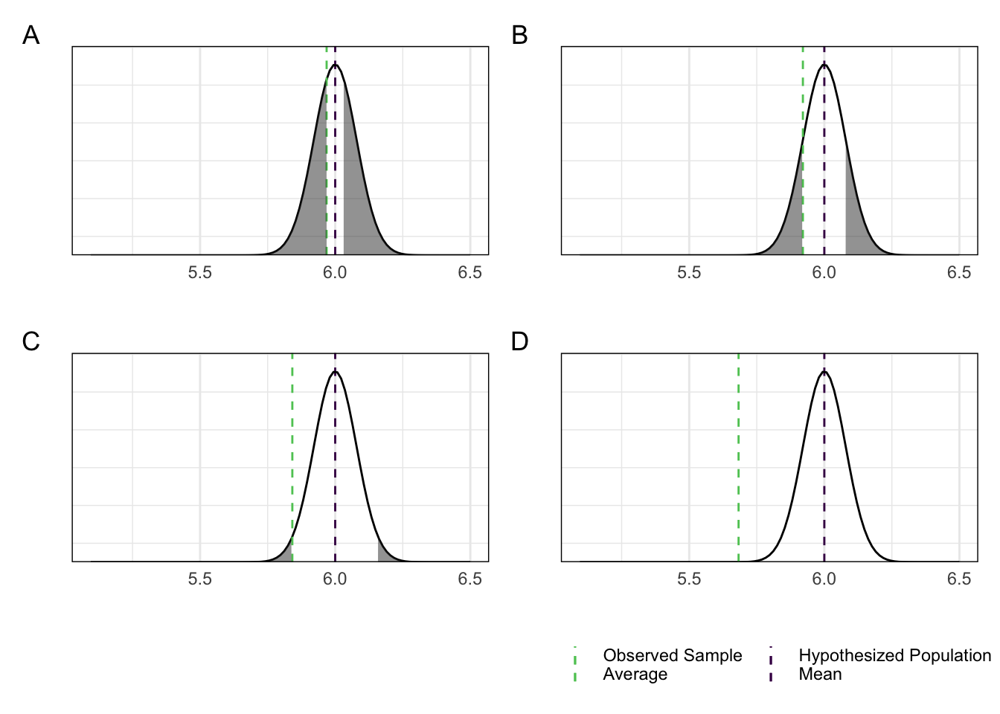

12 Introduction to Statistical Hypothesis Testing
Quick recap: some population is identified in which we’re interested in a particular feature (mean BMI, prevalence of disease, etc.). The only way to find the TruthTM is to examine every single individual in the population, and calculate the value of interest. Unfortunately, this is not possible, so instead we get a representative sample from the general population. In this sample, we can calculate anything we’d like. The question is then, how can we use this sample to say something about the TruthTM?
As an illustrative example, say we are interested in testing a hypothesis that the true mean value in a population is 6 against an alternative hypothesis that the true mean value in the population is not 6. In statistical jargon, we say we’re testing the null hypothesis \(H_0: \mu = 6\) against the alternative \(H_A: \mu \neq 6\). To do so, we look at our sample, and estimate the population mean with the sample average. In the previous section, we saw that the Central Limit Theorem guarantees that the sample average will be “pretty close” to the true population mean (as long as \(n\) is “large enough”), and so using the sample average to try to say something about the true population mean seems like a good ide.
The question we seek to answer is IF the true population mean is indeed 6, would it be reasonable to see the sample average we see? It seems fair to say that if the sample average we see is very close to 6, then it’s reasonable for us to believe that the true population mean is in fact 6, while if our sample average is far from 6, it would be reasonable to dispute the idea that 6 is the true population mean. So, the question then becomes, when is our average far from 6, and in particular, how far from 6 does it have to be before we don’t believe that 6 is indeed the true population mean?
Obviously, the real answer is “it depends, and is very subjective”. We will try to remove the first part, and bring the subjective part of the answer to a scale that everyone can relate to.
Consider the two visualization of our hypothesized population mean and sample average depicted in figure 12.1. Would you say the sample average is far from the hypothesized value on the figure to the left? What about the one on the right?
Figure 12.1: Are the two lines far about?
We can’t really tell. We need some more context. So what if we knew the difference between the two? Are they far apart?
Figure 12.2: Adding the actual difference doesn’t help much.
Still impossible to say, but what if we add a scale to it all? The difference between \(1000000\) and \(1000001\) is basically negligible, while the difference between \(0.0001\) and \(1.0001\) seems huge, even though both differences are \(1\). So we add the scale.
Figure 12.3: With a scale, it is a bit better.
This solved one problem. You can’t mislead me anymore (at least not as much) simply by changing the scale (i.e. zooming in/out), since I can now compare the difference to the absolute values of the two to get some sort of idea of the size of the difference. However, it is still kind of hard to say if the sample average is far from the hypothesized mean or not.
Now, consider the two figures below. Same dotted lines, but the sample average is computed from two different samples (both samples consist of 10 observations, and they both have the same average).
Figure 12.4: Actually seeing the data makes everything clear.
Now I all of a sudden feel much more informed. In the case of the sample in subfigure A, I would definitely argue that the sample average is far from the hypothesized population mean – the average is found in a sample where only one observation is larger than the hypothesized mean. On the other hand, the sample in subfigure B indicates to me that the two lines aren’t that different at all.
When looking at the two figures, I subconsciously compare the difference between the sample average and the hypothesized population mean to the variation of the data. If the difference is big compared to the variation of the data, I think the difference between the sample average and the hypothesized population mean is large, and therefore the hypothesized population mean doesn’t seem to plausibly be the correct population mean. If the difference is small compared to the variation of the data, I would probably think this is simply due to randomness from the sampling rather than due to the true population mean being different from the hypothesized population mean. So, in subfigure A above I would probably conclude that the hypothesis is incorrect, and therfore reject it, while in subfigure B I would probably NOT come to the same conclusion.
The next question is then when the difference is “large enough”16 relative to the variation that we no longer believe the hypothesized population mean to be the TruthTM. As an example, consider the figures below. Here the variation is the same, but the actual sample averages are different. When is the separation between the data and the hypothesized mean so large that we no longer think it can be attributed to randomness from sampling, and more likely is due to a wrong hypothesis?
Figure 12.5: When is the data far enough from the hypothesized mean?
To answer this question, first we need to characterize the difference we can expect from random sampling. Remember, random sampling is governed by probabilities, which in turn are characterized by distributions. If we can find the distribution the quantity we’re interested in would have IF the hypothesized mean is the true population mean, then we can say something about what kind of difference we would expect from random sampling IF the hypothesized mean is in fact the true population mean.
Recall that the Central Limit Theorem tells us exactly what the distribution of an average is: it states that (when \(n\) is “large enough”), the average follows a normal distribution centered around the true population mean with variance \(\sigma^2\) over \(n\). I.e. \(\bar{X} \sim N\left(\mu, \frac{\sigma^2}{n}\right)\). So if we pretend \(\mu_0\) is the true population mean, and that we actually know \(\sigma^2\) (which we never do, but let’s pretend…), then we know the distribution of \(\bar{X}\)! We can use this to quantify how far from \(\mu_0\) the observed value of \(\bar{X}\) actually is. This is done in terms of the probability of observing something that’s even further away. If there’s little chance of observing something further away from \(\mu_0\) than what we observe in our sample, then what we observe must be pretty far away. On the other hand, if the probability of observing something further away from \(\mu_0\) than what we observe is rather large, then what we observe must be pretty close to \(\mu_0\).
Compare the observed values of the sample average to the distribution it would follow IF the true population mean is indeed \(\mu_0\) on the figure below.
In each of the four cases, what is the probability of observing something “further away”? First, we need to define what is “further away”. There’s basically three options: further to the left, further to the right, or either. Which realm we’re in depends on our alternative hypothesis. The alternative hypothesis basically decides which direction we care about. If the alternative is \(H_A: \mu < \mu_0\) we only care about being “further to the left”. If the alternative is \(H_A: \mu > \mu_0\) we only care about being “further to the right”. If the alternative is \(H_A: \mu \neq \mu_0\), we care about both.
In the second paragraph in this section, we decided on using \(H_A: \mu \neq \mu_0\) as the alternative. Recall we find probabilities for continuous random variables as the area under the curve. So the probability of observing something “further away”, if the true population mean is indeed \(\mu_0\), would be the shaded areas below.17

So now we have a metric for being “far away” that is completely independent of the scale of the data! In all cases, the probability of being “further away” is between 0 and 1. There’s still a subjective question left to answer: when is the probability of being “further away” small enough that we conclude what we observed is indeed far away? The scientific community has to a large extent decided that 0.05 is a good cut-off point. Note that this is completely arbitrary, and any cut-off could be used! It comes down to how harsh you want to be: a smaller cut-off needs “more evidence”.
In the above discussion, we pivoted from looking at the data (the difference between the average and the hypothesized mean compared to the variation in the data) to look at the probability of observing an average that is farther away from the hypothesized mean than what we have observed in the sample, IF the hypothesized mean is indeed the true population mean. We could only do this because we assumed that we actually know the true standard deviation. In this case, the Central Limit Theorem gives us the distribution of \(\bar{X}\). Specifically, it tells us that \(\bar{X} \sim N\left(\mu_0, \frac{\sigma^2}{n}\right)\) (again, assuming \(\mu_0\) is the true population mean). In this case, we know from section 10.4.3.1 that \(\frac{\bar{X} - \mu_0}{\sigma/\sqrt{n}} = \frac{\bar{X} - E(\bar{X})}{\text{SD}(\bar{X})} \sim N(0,1)\) (take a normally distributed random variable, subtract its mean, and divide by the standard deviation). If we look at this quantity, it is exactly what we started out with: it is the difference between the average and the hypothesized population mean relative to the variation of the data! (Recall, \(\sigma\) is the standard deviation of the data.) So not only can we actually find the distribution this quantity follows (IF the hypothesized mean is truly the population mean), it is also a metric for the thing we actually want to measure! In general, such a quantity is called a test statistic. It is the statistic (i.e. function of the data) that we will use to perform our test. This particular quantity is called the z-score or z-statistic, and will be the backbone of many of the hypothesis tests we will see in this section.
12.1 Strategy Overview & The Lingo
The general strategy for testing a hypothesis is as follows:
- define your null and alternative hypotheses, \(H_0\) and \(H_A\)
- the null hypothesis is ALWAYS going to be the simple hypothesis. Above, \(H_0: \mu = \mu_0\).
- the alternative can often be one of three: \(H_A: \mu < \mu_0\), \(H_A: \mu > \mu_0\), or \(H_A: \mu \neq \mu_0\). The latter is more common. The two inequalities often used when trying to determine superiority/inferiority of a new drug/treatment
- define you significance level \(\alpha\)
- this is the cut-off value for the probability of observing something “further away”
- find a test statistic that somehow quantifies the “distance” from your data to your hypothesis
- in the example above, we settled on \(\frac{\bar{X} - \mu_0}{\sigma/\sqrt{n}}\)
- make sure you can determine the distribution of your test statistic ASSUMING the hypothesis is true
- this is referred to as the null distribution, since it is the distribution IF the null hypothesis is true
- above, we saw that \(\frac{\bar{X} - \mu_0}{\sigma/\sqrt{n}} \sim N(0,1)\) IF \(\mu_0\) is indeed the true population mean
- calculate the observed value of your test statistic
- above, you would take the observed data, calculate the average, then find \(\frac{\bar{x} - 6}{\sigma/\sqrt{1}}\)
- compare the observed value of your test statistic to its distribution, and compute the probability of observing something “further away” from the hypothesis
- what consitutes “further away” depends on your alternative hypothesis
12.2 When we don’t know \(\sigma^2\)
Everything above was assuming that \(\sigma^2\) is known, i.e. we know the true population variance of the measurements we’re interested in. In the cases where we do NOT know the true standard deviation (spoiler alert: that’s all of them!), and we have to estimate it from the data, we run into a bit of trouble. The distribution of \(\bar{X}\) is no longer known to us, and \(\frac{\bar{X} - \mu_0}{\sigma/\sqrt{n}}\) isn’t really a relevant quantity anymore – since we do not know \(\sigma\), we cannot calculate the observed value of the test statistic! All is not lost, though. Generally two scenarios when we do not know \(\sigma^2\): we have to estimate it, or it follows from the null hypothesis.
Cases where it follows from the null hypothesis are the “simplest” cases. We’ll see examples of this in the coming section. When it does not follow from the null hypothesis, we have to estimate it. In the example above, we would “simply” estimate \(\sigma^2\) from the data as \(s^2 = \frac{1}{n-1}\sum_{i=1}^n (x_i - \bar{x})^2\). It turns out, when we simply plug this into the z-statistic, we get a new statistic that is really nice. This is called the t-statistic, and it follows a t-distribution with \(n-1\) degrees of freedom.